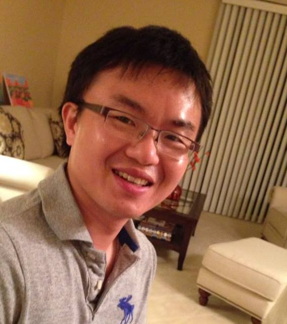

Best paper finalist 2015, Robotics Science and Systems (RSS) Conference
R&D 100 award 2014, R&D Magazine
Learning to Remove Multipath Distortions in Time-of-Flight Range Images Kilho Son, Ming-Yu Liu, Yuichi Taguchi IEEE International Conference on Robotics and Automation (ICRA), 2016, Stockholm, Sweden
Unsupervised Deep Network Pretraining via Human Design Ming-Yu Liu, Arun Mallya, Oncel Tuzel, Xi Chen IEEE Winter Conference on Computer Vision (WACV), 2016, New York, USA
Layered interpretation of street view images Ming-Yu Liu, Shuoxin Lin, Srikumar Ramalingam, Oncel Tuzel Robotics: Science and Systems Conference (RSS) (Best paper finalist), 2015, Rome, Italy
Recursive context propagation network for semantic scene labeling Abhishek Sharma, Oncel Tuzel, Ming-Yu Liu Neural Information Processing Systems (NIPS), 2014, Montreal, Canada
Learning to rankd 3D features Oncel Tuzel, Ming-Yu Liu, Yuichi Taguchi, Arvind Raghunathan European Conference on Computer Vision (ECCV), 2014, Zurich, Switzerland
Joint geodesic upsampling of depth images Ming-Yu Liu, Oncel Tuzel, Yuichi Taguchi Conference on Computer Vision and Pattern Recognition (CVPR), 2013, Portland, Oregon, USA[Results]
Entropy rate clustering: cluster analysis via maximizing a submodular function subject to a matroid constraint Ming-Yu Liu, Oncel Tuzel, Srikumar Ramalingam, Rama Chellappa IEEE Transaction on Pattern Analysis and Machine Intelligence (TPAMI), 2013 [Proofs] [Codes]
Model-based vehicle pose estimation and tracking in videos using random forests Michael Hodlmoser, Branislav Micusik, Marc Pollefeys, Ming-Yu Liu, Martin Kampel 3DV 2013, Seattle, Washington, USA
Fast object localization and pose estimation in heavy clutter for robotic bin picking Ming-Yu Liu, Oncel Tuzel, Ashok Veeraraghavan, Yuichi Taguchi, Tim K. Marks, Rama Chellappa International Journal of Robotics Research (IJRR) 2012 [Codes]
Voting-Based Pose Estimation for Robotic Assembly Using a 3D Sensor Changhyun Choi, Yuichi Taguchi, Oncel Tuzel, Ming-Yu Liu, Srikumar Ramalingam International Conference on Robotics and Automation (ICRA), 2012, St. Paul, Minnesota, USA
A Grassmann Manifold-based Domain Adaptation Approach Jingjing Zheng, Ming-Yu Liu, Rama Chellappa, P Jonathan Phillips International Conference on Pattern Recognition (ICPR) (Oral), 2012, Tsukuba Science City, Japan
Classification and Pose Estimation of Vehicles in Videos by 3D Modeling within Discrete-Continuous Optimization Michael Hödlmoser, Branislav Micusik, Ming-Yu Liu, Marc Pollefeys, Martin Kampel 3DV 2012, Zurich, Switzerland
Entropy rate superpixel segmentation Ming-Yu Liu, Oncel Tuzel, Srikumar Ramalingam, Rama Chellappa Conference on Computer Vision and Pattern Recognition (CVPR), 2011, Colorado Springs, Colorado, USA[Codes]
Fast directional chamfer matching Ming-Yu Liu, Oncel Tuzel, Ashok Veeraraghavan, Rama Chellappa Conference on Computer Vision and Pattern Recognition (CVPR), 2010, San Francisco, California, USA [Codes]
Pose estimation in heavy clutter using a multi-flash camera Ming-Yu Liu, Oncel Tuzel, Ashok Veeraraghavan, Rama Chellappa, Amit Agrawal, Haruhisa Okuda International Conference on Robotics and Automation (ICRA), 2010, Anchorage, Alaska, USA [Codes]
PhD, Electrical&Computer Engineering, University of Maryland College Park, Advisor: Rama Chellappa, 2006-2012
BA, National Chiao Tung University, Taiwan, 1999-2003
Principal Member Research Staff, Mitsubishi Electric Research Labs (MERL), Cambridge, MA, USA, 2015.04-now
Member Research Staff, Mitsubishi Electric Research Labs (MERL), Cambridge, MA, USA, 2013.09-2015.03
Visiting Member Research Staff, Mitsubishi Electric Research Labs (MERL), Cambridge, MA, USA, 2012.02-2013.08
Engineer, Intel, Taiwan branch, 2005-2006
Army officer, second lieutenant, Taiwan, 2003-2005